사회조사분석사-2급 (2018-04-28 기출문제)
1과목: 조사방법론 I
1. 과학적 지식에 가장 가까운 것은?
- 절대적 진리
- 개연성이 높은 지식
- 전통에 의한 지식
- 전문가가 설명한 지식
(정답률: 75%)

2. 다음 중 조사대상의 두 변수들 사이에 인과관계가 성립되기 위한 조건이 아닌 것은?
- 원인의 변수가 결과의 변수에 선행하여야 한다.
- 두 변수간의 상호관계는 제3의 변수에 의해 설명되면 안 된다.
- 때로는 원인변수를 제거해도 결과변수도 존재 할 수 있다.
- 두 변수는 상호연관성을 가져야 한다.
(정답률: 75%)
3. 사회과학적 연구의 일반적인 연구목적과 가장 거리가 먼 것은?
- 사건이나 현상을 설명(Explanation)하는 것이다.
- 사건이나 상황을 기술 또는 서술(Description)하는 것이다.
- 사건이나 상황을 예측(Prediction)하는 것이다.
- 새로운 이론(Theory)이나 가설(Hypothesis)을 만드는 것이다.
(정답률: 65%)
4. 가설에 관한 설명으로 틀린 것은?
- 가설은 과학적 검증방법을 통하여 가설의 옳고 그름을 판단할 수 있어야 한다.
- 가설은 동일 연구 분야의 다른 가설이나 이론과 연관이 없어야 한다.
- 가설은 두 개 이상의 구성개념이나 변수 간의 관계에 대한 진술이다.
- 가설은 반드시 검증 가능한 형태로 진술되어야 한다.
(정답률: 87%)
5. 다음 중 탐색적 연구를 하기 위한 방법으로 가장 적합한 것은?
- 횡단연구
- 유사실험연구
- 시계열연구
- 사례연구
(정답률: 75%)
6. 개념(Concepts)의 정의와 가장 거리가 먼 것은?
- 일정한 관계사실에 대한 추상적인 표현
- 특정한 여러 현상들을 일반화함으로써 나타나는 추상적인 용어
- 현상을 예측 설명하고자 하는 명제, 이론의 전개에서 그 바탕을 이루는 역할
- 사실과 사실 간의 관계에 논리의 연관성을 부여하는 것
(정답률: 59%)
7. 다음과 같은 특징을 지닌 연구방법은?
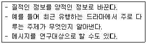
- 투사법
- 내용분석법
- 질적 연구법
- 사회성측정법
(정답률: 80%)
8. 면접원이 자유 응답식 질문에 대한 응답을 기록할 때 지켜야할 원칙과 가장 거리가 먼 것은?
- 면접조사를 진행한 이후 최종응답을 기록한다.
- 응답자가 사용한 후 어휘를 원래 그대로 기록한다.
- 질문과 관련된 모든 것을 기록에 포함시킨다.
- 같은 응답이 반복되더라도 가감 없이 있는 그대로 기록한다.
(정답률: 78%)
9. 다음 중 정치지도자나 대기업경영자 등 조사대상자의 명단은 구할 수 있으나 그들을 직접 만나기는 매우 어려운 경우 가장 적합한 자료수집방법은?
- 면접조사
- 집단조사
- 전화조사
- 우편조사
(정답률: 63%)
10. 양적조사와 질적조사의 사례로 틀린 것은?
- 질적조사 – 사례연구의 기록을 분석하여 핵심적인 개념을 추출한다.
- 양적조사 – 단일사례조사로 청소년들이 흡연 횟수를 3개월 동안 주기적으로 기록한다.
- 질적조사 – 노숙인과 함께 2주간 생활하면서 참여 관찰한다.
- 양적조사 – 초점집단면접을 통해 문제해결방안을 도출한다.
(정답률: 73%)
11. 실험설계(Experimental Design)의 타당성을 높이기 위한 외생변수 통제방법이 아닌 것은?
- 제거(Elimination)
- 균형화(Matching)
- 성숙(Maturation)
- 무작위화(Randomization)
(정답률: 77%)
12. 집합단위의 자료를 바탕으로 개인의 특성을 추리할 때 저지를 수 있는 오류는?
- 알파 오류(α-Fallacy)
- 베타 오류(β-Fallacy)
- 생태학적 오류(Ecological Fallacy)
- 개인주의적 오류(Individualistic Fallacy)
(정답률: 81%)
13. 다음에 제시된 설문지 질문유형의 특징이 아닌 것은?
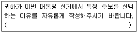
- 탐색적인 연구에 적합하다.
- 질문내용에 대한 연구자의 사전지식을 많이 필요로 하지 않는다.
- 응답자에게 창의적인 자기표현의 기회를 줄 수 있다.
- 응답자의 어문능력에 관계없이 이용이 가능하다.
(정답률: 71%)
14. 다음 사례에서 영향을 미칠 수 있는 대표적인 타당도 저해요인은 무엇인가?
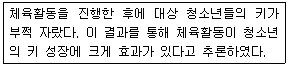
- 성숙효과(Maturation Effect)
- 외부사건(History)
- 검사효과(Testing Effect)
- 도구효과(Instrumentation)
(정답률: 78%)
15. 질적 방법으로 수집된 자료에 관한 설명으로 틀린 것은?
- 정보의 심층적 의미를 파악할 수 있다.
- 유용한 정보의 유실을 줄일 수 있다.
- 현장중심의 사고를 할 수 있다.
- 자료의 표준화를 도모하기 쉽다.
(정답률: 85%)
16. 다음 중 질문문항의 배열에 관한 설명으로 틀린 것은?
- 시작하는 질문은 응답자의 흥미를 유발하는 곳으로 쉽게 대답할 수 있는 것으로 한다.
- 개인의 사생활과 같이 민감한 질문은 가급적 뒤로 돌린다.
- 특수한 것을 먼저 묻고, 일반적인 것을 그 다음에 질문한다.
- 논리적인 순서에 따라 배열함으로써 응답자 자신도 조사의 의미를 찾을 수 있도록 한다.
(정답률: 87%)
17. 다음 중 연구윤리에 어긋나는 것은?
- 연구 대상자의 동의 확보
- 연구 대상자의 프라이버시 확보
- 학술지에 기고한 내용을 대중서, 교양잡지에 쉽게 풀어쓰는 행위
- 이미 발표된 연구결과 또는 문장을 인용표시 없이 발췌하여 연구계획서를 작성
(정답률: 86%)
18. 질문지 작성의 일반적인 과정을 바르게 나열한 것은?(오류 신고가 접수된 문제입니다. 반드시 정답과 해설을 확인하시기 바랍니다.)
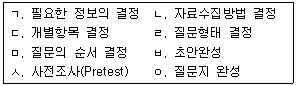
- ㄱ→ㄴ→ㄷ→ㄹ→ㅁ→ㅂ→ㅅ→ㅇ
- ㄱ→ㅁ→ㄴ→ㄹ→ㄷ→ㅂ→ㅅ→ㅇ
- ㄱ→ㄹ→ㄷ→ㄴ→ㅁ→ㅂ→ㅅ→ㅇ
- ㄱ→ㄴ→ㄹ→ㄷ→ㅁ→ㅂ→ㅅ→ㅇ
(정답률: 54%)
19. 전화조사의 장점과 가장 거리가 먼 것은?
- 신속한 조사가 가능하다.
- 면접자에 대한 감독이 용이하다.
- 표본의 대표성을 확보하기 쉽다.
- 광범위한 지역에 대한 조사가 용이하다.
(정답률: 49%)
20. 자료수집방법 중 관찰에 관한 설명으로 틀린 것은?
- 복잡한 사회적 맥락이나 상호작용을 연구하는데 적절한 방법이다.
- 피조사자가 느끼지 못하는 행위까지 조사할 수 있다.
- 양적 연구와 질적 연구에 모두 활용될 수 있다.
- 의사소통능력이 없는 대상자에게는 활용될 수 없다.
(정답률: 82%)
21. 자신의 신분을 밝히지 않은 채 집단의 완전한 성원이 되어 자연스럽게 일어나는 사회적 과정에 참여하는 관찰자의 역할은?
- 완전참여자(Complete Participant)
- 완전관찰자(Complete Observer)
- 참여자로서의 관찰자(Observer as Participant)
- 관찰자로서의 참여자(Participant as Observer)
(정답률: 79%)
22. 대인 면접조사의 특성으로 옳은 것은?
- 연구문제에 대한 사전지식이 부족할수록 구조화된 대인 면접조사방법을 사용하는 것이 좋다.
- 대인 면접조사는 우편 설문조사에 비해 질문과정의 유연성이 상대적으로 높다.
- 대인 면접조사는 우편 설문조사에 비해 환경 차이에 의한 설문응답의 무작위적 오류를 증가시킨다.
- 대인 면접조사는 우편 설문조사에 비해 응답률이 낮다.
(정답률: 76%)
23. 단일사례연구에 관한 설명으로 틀린 것은?
- 외적 타당도가 높다.
- 개입효과에 대한 즉각적인 피드백이 가능하다.
- 조사연구 과정과 실천과정이 통합될 수 있다.
- 개인과 집단뿐만 아니라 조직이나 지역사회도 연구대상이 될 수 있다.
(정답률: 63%)
24. 다음의 조사유형으로 옳은 것은?
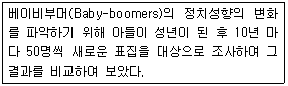
- 횡단(Cross-sectional)조사
- 추세(Trend)조사
- 코호트(Cohort)조사
- 패널(Panel)조사
(정답률: 61%)
25. 집중면접(Focused Interview)에 관한 설명으로 가장 적합한 것은?
- 특정한 가설에 개발하기 위해 효율적으로 이용할 수 있다.
- 면접자의 통제 하에 제한된 주제에 대해 토론한다.
- 개인의 의견보다는 주로 집단적 경험을 이야기 한다.
- 사전에 준비한 구조화된 질문지를 이용하여 면접한다.
(정답률: 34%)
26. 다음 중 작업가설(Working Hypothesis)로 적합하지 않은 것은?
- 교육수준이 높을수록 소득이 높을 것이다.
- 21세기 후반에 이르면 서구문명은 몰락하게 될 것이다.
- 계층 간 소득격차가 클수록 사회갈등이 심화 될 것이다.
- 출산율은 도시보다 농촌이 더 높을 것이다.
(정답률: 73%)
27. 2차 자료의 이용에 관한 설명으로 틀린 것은?
- 2차 자료의 이점은 시간과 비용을 절약할 수 있다.
- 2차 자료는 조사목적의 적합성, 자료의 정확성, 일치성 등을 기준으로 평가될 수 있다.
- 조사목적을 달성하기 위해서는 2차 자료가 반드시 필요하다.
- 2차 자료는 경우에 따라 당면한 조사문제를 평가할 수도 있다.
(정답률: 83%)
28. 다음 사례의 분석단위로 가장 적합한 것은?
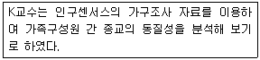
- 가구원
- 가구
- 종교
- 국가
(정답률: 60%)
29. 순수실험설계에 관한 설명으로 옳은 것은?
- 통제집단 사전사후설계의 경우 주시험효과를 제거하기 어렵다.
- 순수실험설계는 학문적 연구보다 상업적 연구에서 주로 활용된다.
- 통제집단 사후실험설계는 결과변수 값을 두 번 측정한다.
- 솔로몬 4개 집단설계는 통제집단 사전사후설계와 통제집단 사후실험설계의 결합 형태이다.
(정답률: 71%)
30. 질문지를 작성할 때 고려하여야 할 사항과 가장 거리가 먼 것은?
- 관련 있는 질문의 경우 한 문항으로 묶어서 문항수를 줄인다.
- 특정한 대답을 암시하거나 유도해서는 안 된다.
- 모호한 질문을 피한다.
- 응답자의 수준에 맞는 언어를 사용한다.
(정답률: 85%)
2과목: 조사방법론 II
31. 다음 설명에 포함되어 있는 타당도 저해 요인은?
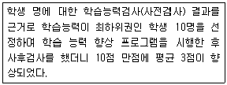
- 역사적 요인
- 실험대상의 변동
- 통계적 회귀
- 선정요인
(정답률: 68%)
32. 측정과정에서 신뢰성을 높이기 위한 방법에 관한 설명으로 틀린 것은?
- 응답자에 따라 다양한 면접방식을 적용한다.
- 측정항목의 모호성을 제거한다.
- 측정항목의 수를 늘린다.
- 응답자가 모르는 내용은 측정하지 않는다.
(정답률: 67%)
33. 다음 중 불법 체류자처럼 일반적으로 쉽게 접근하기 힘든 집단을 대상으로 설문조사를 할 때 가장 적합한 표본추출방법은?
- 눈덩이표본추출(Snowball Sampling)
- 편의표본추출(Convenience Sampling)
- 판단표본추출(Judgment Sampling)
- 할당표본추출(Quota Sampling)
(정답률: 80%)
34. 표본의 크기에 관한 설명으로 틀린 것은?
- 허용오차가 클수록 표본의 크기가 커야 한다.
- 조사하고자 하는 변수의 분산값이 클수록 표본의 크기는 커야 한다.
- 추정치에 대한 높은 신뢰수준이 요구될수록 표본의 크기는 커야 한다.
- 비확률 표본추출의 경우 표본의 크기는 예산과 시간을 고려하여 조사자가 결정할 수 있다.
(정답률: 54%)
35. 질적 변수와 양적 변수에 관한 설명으로 틀린 것은?
- 질적 변수는 속성의 값을 나타내는 수치의 크기가 의미 없는 변수이다.
- 양적 변수는 측정한 속성값을 연산이 가능한 의미 있는 수치로 나타낼 수 있다.
- 양적 변수는 이산변수와 연속변수로 구분된다.
- 몸무게가 80kg 이상인 사람을 1로, 이하인 사람을 0으로 표시하는 것은 질적 변수를 양적 변수로 변화시킨 것이다.
(정답률: 67%)
36. 사회조사에서 개념의 재정의(Reconceptualization)가 필요한 이유와 가장 거리가 먼 것은?
- 사회조사에서 사용되는 개념은 일상생활에서 통상적으로 사용되는 상투어와는 그 의미가 다를 수 있기 때문이다.
- 동일한 개념이라도 사회가 변함에 따라 원래의 뜻이 변할 수 있기 때문이다.
- 한 가지 개념이라도 두 가지 또는 그 이상의 다양한 의미를 가지고 있을 가능성이 많으므로 이들 각기 다른 의미 중에서 어떤 특정의 의미를 조사연구 대상으로 삼을 것인가를 밝혀야 하기 때문이다.
- 개념과 개념 간의 상관관계가 아닌 인과관계를 밝혀야 하기 때문이다.
(정답률: 80%)
37. 크론바흐 알파계수(Cronbach's alpha)에 관한 설명으로 틀린 것은?
- 척도를 구성하는 항목들 간에 나타난 상관관계 값을 평균처리한 것이다.
- 크론바흐 알파계수는 –1에서 +1의 값을 취한다.
- 척도를 구성하는 항목 중 신뢰도를 저해하는 항목을 발견해 낼 수 있다.
- 척도를 구성하는 항목간의 내적 일관성을 측정한다.
(정답률: 67%)
38. 특정 지역 전체인구의 1/4은 A구역에, 3/4은 B구역에 분포되어 있고, A, B 두 구역의 인구 중 60%가 고졸자이고 40%가 대졸자라고 가정한다. 이들 A, B 두 구역의 할당표본표집의 크기를 1,000명으로 제한한다면, A지역의 고졸자와 대졸자는 각각 몇 명씩 조사해야 하는가?
- 고졸자 100명, 대졸자 150명
- 고졸자 150명, 대졸자 100명
- 고졸자 450명, 대졸자 300명
- 고졸자 300명, 대졸자 450명
(정답률: 77%)
39. 다음 설명에 해당하는 척도는?
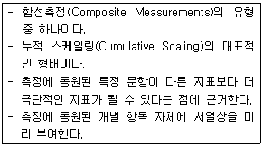
- 크루스칼(Kruskal) 척도
- 서스톤(Thurstone) 척도
- 보가더스(Borgadus) 척도
- 거트만(Guttman) 척도
(정답률: 63%)
40. 다음 사례에 해당하는 타당성은?
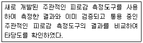
- 내용타당성(Content Validity)
- 동시타당성(Concurrent Validity)
- 예측타당성(Predictive Validity)
- 판별타당성(Discriminant Validity)
(정답률: 45%)
41. 사회과학에서 척도를 구성하는 이유와 가장 거리가 먼 것은?
- 측정의 신뢰성을 높여준다.
- 변수에 대한 질적인 측정치를 제공한다.
- 하나의 지표로 측정하기 어려운 복합적인 개념들을 측정한다.
- 여러 개의 지표를 하나의 점수로 나타내어 자료의 복잡성을 덜어준다.
(정답률: 65%)
42. “상경계열에 다니는 대학생이 이공계열에 다니는 대학생보다 물가변동에 대한 관심이 더 높을 것이다.”라는 가설에서 '상경계열학생 유무'라는 변수를 척도로 나타낼 때 이 척도의 성격은?
- 순위척도
- 명목척도
- 서열척도
- 비율척도
(정답률: 76%)
43. 체계적 표집에서 집단의 크기가 100만 명이고 표본의 크기가 1,000명일 때, 다음 중 가장 적합한 표집방법은?
- 먼저 단순무작위로 1,000명을 뽑아 그 중에서 편중된 표본은 제거하고, 그것을 대체하는 표본을 다시 뽑는다.
- 최초의 사람을 무작위로 선정한 후 매 번째 사람을 고른다.
- 모집단이 너무 크기 때문에 100만 명을 1,000개의 집단으로 나누어야 한다.
- 모집단을 1,000개의 하위집단으로 나누고, 그 하위집단에서 1명씩 고르면 된다.
(정답률: 64%)
44. 측정의 오류에 관한 설명으로 옳은 것은?
- 편향에 의해 체계적 오류가 발생한다.
- 무작위 오류는 측정의 타당도를 저해한다.
- 표준화된 측정도구를 사용하더라도 체계적 오류를 줄일 수 없다.
- 측정자, 측정 대상자 등에 일관성이 없어 생기는 오류를 체계적 오류라 한다.
(정답률: 54%)
45. 일반적인 표본추출과정을 바르게 나열한 것은?
- 표본크기 결정→모집단 확정→표본틀 결정→표본추출방법 결정→표본추출
- 모집단 확정→표본크기 결정→표본틀 결정→표본추출방법 결정→표본추출
- 모집단 확정→표본틀 결정→표본추출방법 결정→표본크기 결정→표본추출
- 표본틀 결정→모집단 확정→표본크기 결정→표본추출방법 결정→표본추출
(정답률: 67%)
46. 다음 사례의 측정에 대한 설명으로 옳은 것은?
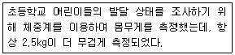
- 타당도는 높지만 신뢰도는 낮다.
- 신뢰도는 높지만 타당도는 낮다.
- 신뢰도도 높고 타당도도 높다.
- 신뢰도도 낮고 타당도도 낮다.
(정답률: 71%)
47. 개념적 정의와 조작적 정의에 관한 설명으로 틀린 것은?
- 개념적 정의는 추상적 수준의 정의이다.
- 조작적 정의는 인위적이기 때문에 가급적 피해야 한다.
- 개념적 정의와 조작적 정의가 반드시 일치하는 것은 아니다.
- 조작적 정의는 측정을 위하여 불가피하다.
(정답률: 79%)
48. 개념타당성(Construct Validity)의 종류가 아닌 것은?
- 이해타당성(Nomological Validity)
- 집중타당성(Convergent Validity)
- 판별타당성(Discriminant Validity)
- 기준 관련 타당성(Criterion-related Validity)
(정답률: 57%)
49. 전수조사와 비교한 표본조사의 특징에 관한 설명으로 옳은 것은?
- 시간과 노력이 많이 든다.
- 비표본오차를 줄일 수 있다.
- 항상 정확한 자료를 수집할 수 있다.
- 조사기간 동안에 발생하는 변화를 반영하지 못한다.
(정답률: 62%)
50. 측정의 신뢰성(Reliability)과 가장 거리가 먼 개념은?
- 유연성(Flexibility)
- 안정성(Stability)
- 일관성(Consistency)
- 예측가능성(Predictability)
(정답률: 67%)
51. 모든 요소의 총체로서 조사자가 표본을 통해 발견한 사실을 토대로 하여 일반화하고자 하는 궁극적인 대상을 지칭하는 것은?
- 표본추출단위(Sampling Unit)
- 표본추출분포(Sampling Distribution)
- 표본추출 프레임(Sampling Frame)
- 모집단(Population)
(정답률: 73%)
52. 서열측정의 특징을 모두 고른 것은?
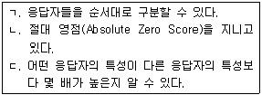
- ㄱ
- ㄱ, ㄴ
- ㄴ, ㄷ
- ㄱ, ㄴ, ㄷ
(정답률: 72%)
53. 다음 설명에 해당하는 척도는?
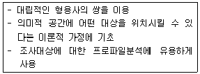
- 의미분화 척도(Semantic Differential Scale)
- 서스톤 척도(Thruston Scale)
- 스타펠 척도(Staple Scale)
- 거트만 척도(Guttman Scale)
(정답률: 78%)
54. 전문직에 종사하는 남성근로자를 대상으로 하는 사회조사에서 변수가 될 수 없는 것은?
- 연령
- 성별
- 직업종류
- 근무시간
(정답률: 79%)
55. 확률 표본추출 방법만으로 짝지어진 것은?
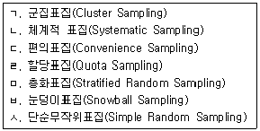
- ㄱ, ㄴ, ㄷ, ㄹ
- ㄱ, ㄹ, ㅁ, ㅂ
- ㄴ, ㄹ, ㅂ, ㅅ
- ㄱ, ㄴ, ㅁ, ㅅ
(정답률: 77%)
56. 층화표집과 집락표집에 관한 설명으로 옳은 것은?
- 층화표집은 모든 부분집단에서 표본을 선정한다.
- 집락표집은 모집단을 하나의 집단으로만 분류한다.
- 집락표집은 부분집단 내에 동질적인 요소로 이루어진다고 전제한다.
- 층화표집은 부분집단 간에 동질적인 요소로 이루어진다고 전제한다.
(정답률: 59%)
57. 척도구성 방법을 비교 척도구성(Comparative Scaling)과 비비교 척도구성(Noncomparative Scaling)으로 구분할 때 비비교 척도구성에 해당하는 것은?
- 쌍대 비교법(Paired Comparison)
- 순위법(Rank-order)
- 연속 평정법(Continuous Rating)
- 고정 총합법(Constant Sum)
(정답률: 56%)
58. 응답자의 월평균 소득금액을 '원' 단위로 조사하고자 하는 경우에 적합한 척도는?
- 비율척도
- 등간척도
- 서열척도
- 명목척도
(정답률: 70%)
59. 다음 중 사회조사에서 비확률 표본추출이 많이 사용되는 이유로 가장 적합한 것은?
- 표본추출오차가 적게 나타난다.
- 모집단에 대한 추정이 용이하다.
- 표본설계가 용이하고 시간과 비용을 절약할 수 있다.
- 모집단 본래의 특성과 차이가 나지 않는 결과를 얻을 수 있다.
(정답률: 67%)
60. 표본오차(Sampling Error)에 관한 설명으로 옳은 것은?
- 표본의 크기가 커지면 늘어난다.
- 모집단의 표본의 차이에 의해 발생하는 오류를 말한다.
- 조사연구의 모든 과정에서 확산되어 발생한다.
- 조사원의 훈련부족으로 인해 각기 다른 성격의 자료가 수집되는 경우에 발생한다.
(정답률: 68%)
3과목: 사회통계
61. 자료의 위치를 나타내는 척도로 알맞지 않은 것은?
- 중앙값
- 백분위수
- 표준편차
- 사분위수
(정답률: 67%)
62. 어떤 사회정책에 대한 찬성률을 추정하고자 한다. 크기 n인 임의표본(확률표본)을 추출하여 자료를 x1,⋯,xn 으로 입력하였을 때 에 대한 점 추정치로 옳은 것은? (단, 찬성이면 0, 반대면 1로 코딩한다.)
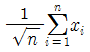
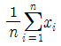
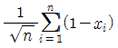
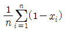
(정답률: 27%)
63. 다음 중 표준편차가 가장 큰 자료는?
- 3 4 5 6 7
- 3 3 5 7 7
- 3 5 5 5 7
- 5 6 7 8 9
(정답률: 60%)
64. 어느 공장에서 일주일 동안 생산되는 제품의 수 는 평균이 50, 분산이 15인 확률분포를 따른다. 이 공장의 일주일 동안의 생산량이 45개에서 55개 사이일 확률의 하한을 구하면?
- 1/5
- 2/5
- 3/5
- 4/5
(정답률: 25%)
65. 아파트의 평수 및 가족수가 난방비에 미치는 영향을 알아보기 위해 중회귀분석을 실시하여 다음의 결과를 얻었다. 분석 결과에 대한 설명으로 틀린 것은? (단, Y는 아파트 난방비(천원)이다.)
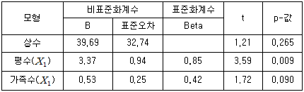
- 추정된 회귀식은
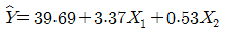
이다. - 유의수준 5%에서 종속변수 난방비에 유의한 영향을 주는 독립변수는 평수이다.
- 가족수가 주어질 때, 난방비는 아파트가 1평 커질 때 평균 3.37(천원) 증가한다.
- 아파트 평수가 30평이고 가족이 5명인 가구의 난방비는 122.44(천원)으로 예측된다.
(정답률: 46%)
66. 확률변수 X의 평균은 10, 분산은 5이다. Y=5+2X의 평균과 분산은?
- 20, 15
- 20, 20
- 25, 15
- 25, 20
(정답률: 60%)
67. 정규분포를 따르는 모집단으로부터 10개의 표본을 임의추출한 모평균에 대한 95% 신뢰구간은 (74.76, 165.24)이다. 이때 모평균의 추정치와 추정량의 표준오차는? (단, t가 자유도가 9인 t-분포를 따르는 확률변수일 때, P(t＞2.262)=0.025 이다.)
- 90.48, 20
- 90.48, 40
- 120, 20
- 120, 40
(정답률: 38%)
68. 어느 회사는 노조와 협의하여 오후의 중간 휴식시간을 20분으로 정하였다. 그런데 총무과장은 대부분의 종업원이 규정된 휴식시간보다 더 많은 시간을 쉬고 있다고 생각하고 있다. 이를 확인하기 위하여 전체 종업원 1,000명 중에서 25명을 조사한 결과 표본으로 추출된 종업원의 평균 휴식시간은 22분이고 표준편차는 3분으로 계산되었다. 유의수준 5%에서 총무과장의 의견에 대한 가설검정 결과로 옳은 것은? (단, t(0.⑤t 24)=1.711)
- 검정통계량 t＜1.711 이므로 귀무가설을 기각한다.
- 검정통계량 t＜1.711 이므로 귀무가설을 채택한다.
- 종업원의 실제 휴식시간은 규정시간 20분보다 더 길다고 할 수 있다.
- 종업원의 실제 휴식시간은 규정시간 20분보다 더 짧다고 할 수 있다.
(정답률: 53%)
69. 회귀분석 결과, 분산분석표에서 잔차제곱합(SSE)은 60, 총제곱합(SST)은 240임을 알았다. 이 회귀모형의 결정계수는?
- 0.25
- 0.5
- 0.75
- 0.95
(정답률: 59%)
70. 다음 중 대푯값에 해당하지 않는 것은?
- 최빈값
- 기하평균
- 조화평균
- 분산
(정답률: 71%)
71. 343명의 대학생을 랜덤하게 뽑아서 조사한 결과 110명의 학생이 흡연 경험이 있었다. 대학생 중 흡연 경험자 비율에 대한 95% 신뢰구간을 구한 것으로 옳은 것은?(단, z0.025=1.96, z0.⑤=1.645, z0.1=1.282)
- 0.256＜p＜0.386
- 0.279＜p＜0.362
- 0.271＜p＜0.370
- 0.262＜p＜0.379
(정답률: 47%)
72. 어느 제약회사에서 생산하고 있는 진통제는 복용 후 진통효과가 나타날 때까지 걸리는 시간이 평균 30분, 표준편차 8분인 정규분포를 따른다고 한다. 임의로 추출한 100명의 환자에게 진통제를 복용시킬 때, 복용 후 40분에서 44분 사이에 진통효과가 나타나는 환자의 수는? (단, 다음 표준정규분포표를 이용하시오.)
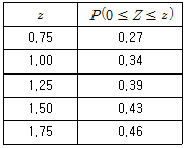
- 4
- 5
- 7
- 10
(정답률: 54%)
73. 일정기간 공사장지대에서 방목한 가축 소변의 불소 농도에 변화가 있는가를 조사하고자 한다. 랜덤하게 추출한 10마리의 가축 소변의 불소 농도를 방목 초기에 조사하고 일정기간 방목한 후 다시 소변의 불소 농도를 조사하였다. 방목 전후의 불소 농도에 차이가 있는가에 대한 분석방법으로 적합한 것은?
- 단일 모평균에 대한 검정
- 독립표본에 의한 두 모평균의 비교
- 쌍체비교(대응비교)
- F-Test
(정답률: 53%)
74. 확률변수 X는 포아송분포를 따른다고 하자. X의 평균이 5라고 할 때 분산은 얼마인가?
- 1
- 3
- 5
- 9
(정답률: 67%)
75. 단순회귀분석을 수행한 결과, 보기와 같은 결과를 얻었다. 결정계수 R2값과 기울기에 대한 가설 H0:β1 에 대한 유의수준 5%에 대한 검정결과로 옳은 것은?(단,
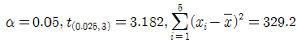
)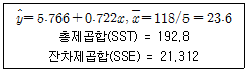
- R2=0.889, 기울기를 0이라 할 수 없다.
- R2=0.551, 기울기를 0이라 할 수 없다.
- R2=0.889, 기울기를 0이라 할 수 있다.
- R2=0.551, 기울기를 0이라 할 수 있다.
(정답률: 46%)
76. 어느 자동차 회사의 영업 담당자는 영업전략의 효과를 검정하고자 한다. 영업사원 10명을 무작위로 추출하여 새로운 영업전략을 실시하기 전과 실시한 후의 영업성과(월 판매량)를 조사하였다. 영업사원의 자동차 판매량의 차이는 정규분포를 따른다고 하자. 유의수준 5%에서 새로운 영업전략이 효과가 있는지 검정한 결과는? (단, 유의수준 5%에 해당하는 자유도 9인 t분포값은 -1.833 이다.)
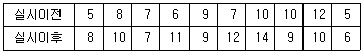
- 새로운 영업전략의 판매량 증가 효과가 있다고 할 수 있다.
- 새로운 영업전략의 판매량 증가 효과가 없다고 할 수 있다.
- 새로운 영업전략 실시 전후 판매량은 같다고 할 수 있다.
- 주어진 정보만으로는 알 수 없다.
(정답률: 48%)
77. 다음 분산분석(ANOVA)표는 상품포장색깔(빨강, 노랑, 파랑)이 판매량에 미치는 영향을 알아보기 위해서 4곳의 가게를 대상으로 실험한 결과이다.
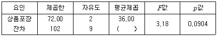
위의 분산분석표에서 ( )에 알맞은 잔차 평균제곱 값은 얼마인가?- 11.33
- 14.33
- 10.23
- 13.23
(정답률: 69%)
78. P(A)=0.4, P(B)=0.2, P(B|A)=0.4일때 P(A|B)는?
- 0.4
- 0.5
- 0.6
- 0.8
(정답률: 60%)
79. 다음 중 표본평균(
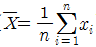
)의 분포에 관한 설명으로 틀린 것은?- 표본평균의 분포 평균은 모집단의 평균과 동일하다.
- 표본의 크기가 어느 정도 크면 표본평균의 분포는 근사적 정규분포를 따른다.
- 표본평균의 분포는 모집단의 분포와 동일하다.
- 표본평균의 분포 분산은 표본의 크기에 따라 달라진다.
(정답률: 46%)
80. 왜도가 0이고 첨도가 3인 분포의 형태는?
- 좌우 대칭인 분포
- 왼쪽으로 치우친 분포
- 오른쪽으로 치우친 분포
- 오른쪽으로 치우치고 뾰족한 모양의 분포
(정답률: 72%)
81. 표준정규분포를 따르는 확률변수의 제곱은 어떤 분포를 따르는가?
- 정규분포
- t-분포
- F-분포
- 카이제곱분포
(정답률: 52%)
82. 다음 설명 중 틀린 것은?
- 모수의 추정에 사용되는 통계량을 추정량이라고 하고 추정량의 관측값을 추정치라고 한다.
- 모수에 대한 추정량의 기댓값이 모수와 일치할 때 불편추정량이라 한다.
- 모표준편차는 표본표준편차의 불편추정량이다.
- 표본평균은 모평균의 불편추정량이다.
(정답률: 46%)
83. 자료들의 분포형태와 대푯값에 관한 설명으로 옳은 것은?
- 오른쪽 꼬리가 긴 분포에서는 중앙값이 평균보다 크다.
- 왼쪽 꼬리가 긴 분포에서는 최빈값 ＜ 평균 ＜ 중앙값 순이다.
- 중앙값은 분포와 무관하게 최빈값보다 작다.
- 비대칭의 정도가 강한 경우에는 대푯값으로 평균보다 중앙값을 사용하는 것이 더 바람직하다고 할 수 있다.
(정답률: 62%)
84. 다음의 자료에 대한 절편이 없는 단순회귀모형 Yi=βxi+εi 를 가정할 때, 최소제곱법에 의한 β의 추정값을 구하면?
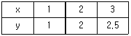
- 0.75
- 0.82
- 0.89
- 0.96
(정답률: 30%)
85. 어떤 철물점에서 10가지 길이의 못을 팔고 있으며, 못의 길이는 각각 2.5, 3.0, 4.0, 4.5, 5.0, 5.5, 6.0, 6.5, 7.0cm이다. 만약 현재 남아 있는 못 가운데 10%는 4.0cm인 못이고, 15%는 5.0cm인 못이며, 53%는 5.5cm인 못이라면 현재 이 철물점에 있는 못 길이의 최빈수는?
- 4.5cm
- 5.0cm
- 5.5cm
- 6.0cm
(정답률: 74%)
86. 똑같은 크기의 사과 10개를 다섯 명의 어린이에게 나누어주는 방법의 수는? (단,
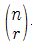
은 n개 중에서 r개를 선택하는 조합의 수이다.)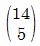
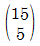
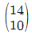
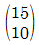
(정답률: 39%)
87. 어느 지방선거에서 각 후보자의 지지도를 알아보기 위하여 120명을 표본으로 추출하여 다음과 같은 결과를 얻었다. 세 후보 간의 지지도가 같은지를 검정하기 위한 검정통계량의 값은?
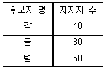
- 2
- 4
- 5
- 8
(정답률: 42%)
88. 일원분산분석에 대한 설명으로 틀린 것은?
- 제곱합들의 비를 이용하여 분석하므로 F분포를 이용하여 검정한다.
- 오차제곱합을 이용하므로 X2분포를 이용하여 검정할 수도 있다.
- 세 개 이상 집단 간의 모평균을 비교하고자 할 때 사용한다.
- 총제곱합은 처리제곱합과 오차제곱합으로 분해된다.
(정답률: 43%)
89. 확률변수 X는 시행횟수가 n이고, 성공할 확률이 p인 이항분포를 따를 때, 옳은 것은?
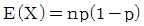
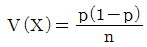
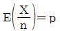
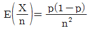
(정답률: 53%)
90. 다음 중 가설검정에 관한 설명으로 옳은 것은?(문제 오류로 가답안 발표시 4번으로 발표되었지만 확정답안 발표시 2, 4번이 정답 처리 되었습니다. 여기서는 가답안인 4번을 누르면 정답 처리 됩니다.)
- 일반적으로 표본자료에 의해 입증하고자 하는 가설을 대립가설로 세운다.
- 1종 오류와 2종 오류 중 더 심각한 오류는 1종 오류이다.
- p-값이 유의수준보다 크면 귀무가설을 기각한다.
- 양측검정으로 유의하지 않은 자료라도 단측검정을 하면 유의할 수도 있다.
(정답률: 29%)
91. 교육수준에 따른 생활만족도의 차이를 다양한 배경변수를 통제한 상태에서 비교하기 위해서 다중회귀분석을 실시하고자 한다. 교육수준을 5개의 범주로(무학, 초졸, 중졸, 고졸, 대졸 이상) 측정하였다. 이때 대졸을 기준으로 할 때, 교육수준별 차이를 나타내는 가변수(Dummy Variable)를 몇 개 만들어야 하는가?
- 1개
- 2개
- 3개
- 4개
(정답률: 64%)
92. 사회조사분석사 시험 응시생 500명의 통계학 성적의 평균점수는 70점이고, 표준편차는 10점이라고 한다. 통계학 성적이 정규분포를 따른다고 할 때, 성적이 50점에서 90점 사이인 응시자는 약 몇 명인가? (단, P(Z＜2)=0.9772)
- 498명
- 477명
- 378명
- 250명
(정답률: 60%)
93. 모집단으로부터 크기가 100인 표본을 추출하였다. 이 표본으로부터 표본비율
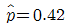
를 추정하였다. 모비율에 대한 가설 H0:p=0.4 vs H1:p＞0.4를 검정하기 위한 검정통계량은?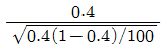
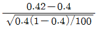
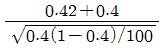
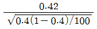
(정답률: 65%)
94. 변수 x와 y에 대한 n개의 n개의 자료 (x1,y1),⋯,(xn,yn) 에 대하여 단순선형회귀모형 y=β0+β1xi+εi을 적합시키는 경우, 잔차
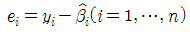
에 대한 성질이 아닌 것은?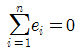
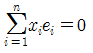
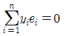
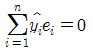
(정답률: 50%)
95. 서로 다른 4가지 교수방법 A, B, C, D의 학습 효과를 알아보기 위하여 같은 수준에 있는 학생중에서 99명을 임의추출하여 A교수방법에 19명, B교수방법에 31명, C교수방법에 27명, D교수방법에 22명을 할당하였다. 일정 기간 수업 후 성취도를 100점 만점으로 측정, 정리하여 다음의 평방합(제곱합)을 얻었다. 교수방법 A, B, C, D의 학습효과사이에 차이가 있는가를 검정하기 위한 F-통계량 값은?
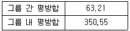
- 0.175
- 0.180
- 5.71
- 8.11
(정답률: 35%)
96. Y의 X에 대한 회귀직선식이
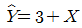
라 한다. Y의 표준편차가 5, X의 표준편차가 3일 때, X와 Y에의 상관계수는?- 0.6
- 1
- 0.8
- 0.5
(정답률: 48%)
97. 분산분석의 기본 가정이 아닌 것은?
- 각 모집단에서 반응변수는 정규분포를 따른다.
- 각 모집단에서 독립변수는 F분포를 따른다.
- 반응변수의 분산은 모든 모집단에서 동일하다.
- 관측값들은 독립적이어야 한다.
(정답률: 42%)
98. 평균이 μ이고 분산이 16인 정규모집단으로부터 크기가 100인 확률분포의 평균을
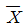
라 하자. H0:μ=8 vs H1:μ=6.416의 검정을 위해 기각역을 ＜7.2로 할 때, 제1종 오류와 제2종 오류를 범할 확률은? (단, P(Z＜2)=0.977, P(X＜1.96)=0.975, P(Z＜1.645)=0.95), P(Z＜1)=0.842)- 제1종 오류를 범할 확률 0.⑤, 제2종 오류를 범할 확률 0.025
- 제1종 오류를 범할 확률 0.023, 제2종 오류를 범할 확률 0.025
- 제1종 오류를 범할 확률 0.023, 제2종 오류를 범할 확률 0.⑤
- 제1종 오류를 범할 확률 0.⑤, 제2종 오류를 범할 확률 0.023
(정답률: 36%)
99. Y=a+bX, (b＞0)인 관계가 성립할 때 두 확률변수 X와 Y 간의 상관계수 ρX,Y 는?
- ρX,Y=1.0
- ρX,Y=0.8
- ρX,Y=0.6
- ρX,Y=0.4
(정답률: 54%)
100. 결혼시기가 계절(봄, 여름, 가을, 겨울)별로 동일한 비율인지를 검정하려고 신혼부부 200쌍을 조사하였다. 가장 적합한 가설검정 방법은?
- 카이제곱 적합도검정
- 카이제곱 독립성검정
- 카이제곱 동질성검정
- 피어슨 상관계수검정
(정답률: 30%)